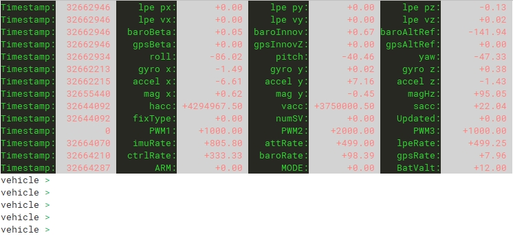

控制台功能是RflyPilot飞控的一个非常实用的功能，它起到了远程调试的功能，它可以作为简易的飞控地面站功能。它支持多种调试指令，也可也由开发者自行增加指令。于此同时，控制台还支持实时显示当前状态信息，包括姿态、GPS信号质量、运行频率等等。在室外进行实飞实验时，利用手机SSH连接到RflyPilot控制台，即可简单便捷地获取飞控状态信息，查看异常信息。

状态信息
如上图所示，RflyPilot飞控的状态信息会实时更新。
| 符号 | 说明 | 单位 |
|---|---|---|
| Timestamp | 当前行变量的时间戳 | 微秒 |
| lpe p{x,y,z} | LPE估计位置 | m |
| lpe v{x,y,z} | LPE估计速度 | m/s |
| roll/pitch/yaw | 姿态角 | deg |
| baroInnov | 气压计新息 | m |
| baroAltRef | 气压计参考高度 | m |
| gpsInnovZ | GPS垂向新息 | m |
| gpsAltRef | GPS高度参考 | m |
| gyro_{x,y,z} | 角速度 | deg/s |
| accel_{x,y,z} | 加速度 | m/s^2 |
| mag_{x,y,z} | 磁力计输出 | |
| hacc | GPS水平精度因子 | |
| vacc | GPS垂直精度因子 | |
| sacc | GPS速度精度因子 | |
| fixType | GPS工作模式 | |
| numSV | GPS卫星数 | |
| Updated | 状态估计初始化完成标志位 | |
| imuRate | IMU采样率 | Hz |
| ctrlRate | 控制器运行频率 | Hz |
| gpsRate | GPS数据更新频率 | Hz |
| ARM | 遥控器解锁通道CH6 | |
| MODE | 遥控器模式通道CH5 | |
| BatValt | 电池电压 | V |
| Temp | CPU工作温度 | degC |
Tip
为获得精确的电池电压数据，需要对电池参数进行校准，相关代码在src/drivers/adc/ads1115/ADS1115.cpp，约321行。校准参数位于configure.h文件中，BATTERY_VALTAGE_K和BATTERY_VALTAGE_B，校准参考公式为y=BATTERY_VALTAGE_K*x + BATTERY_VALTAGE_B。